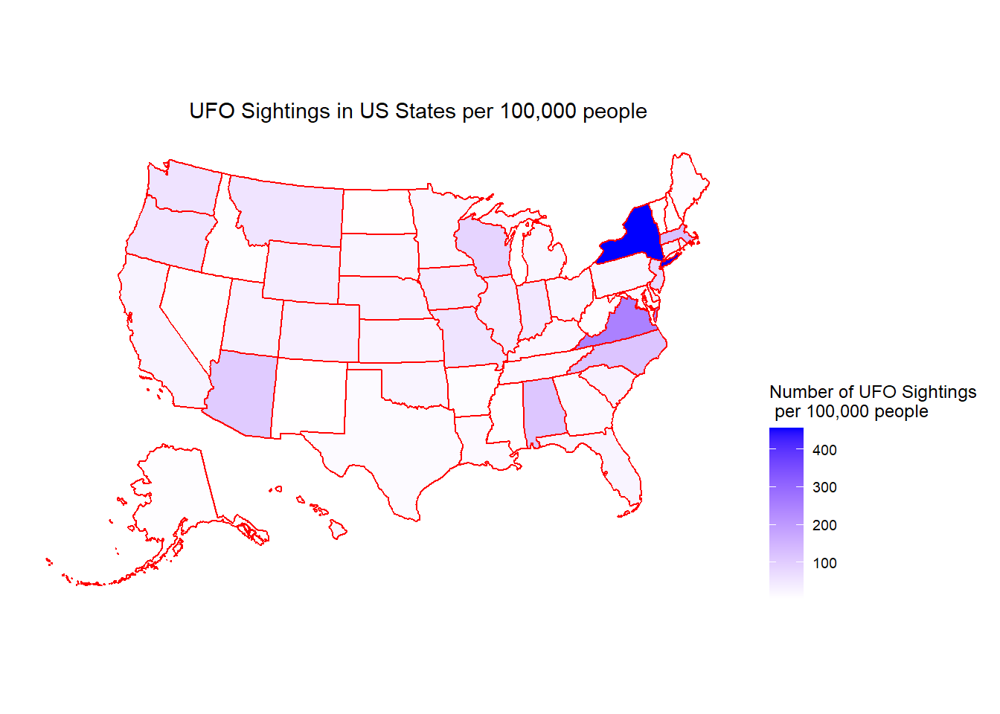
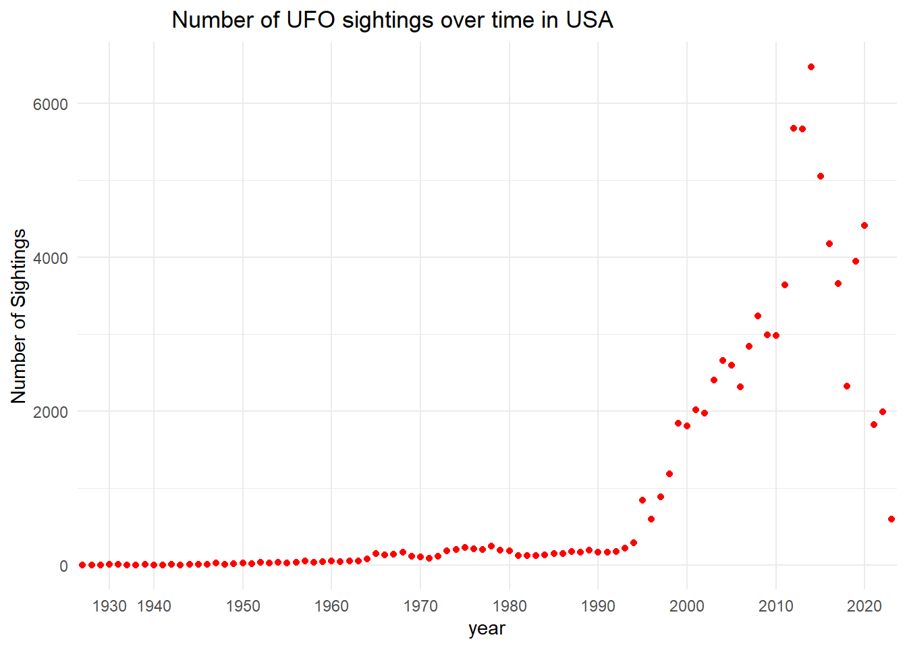
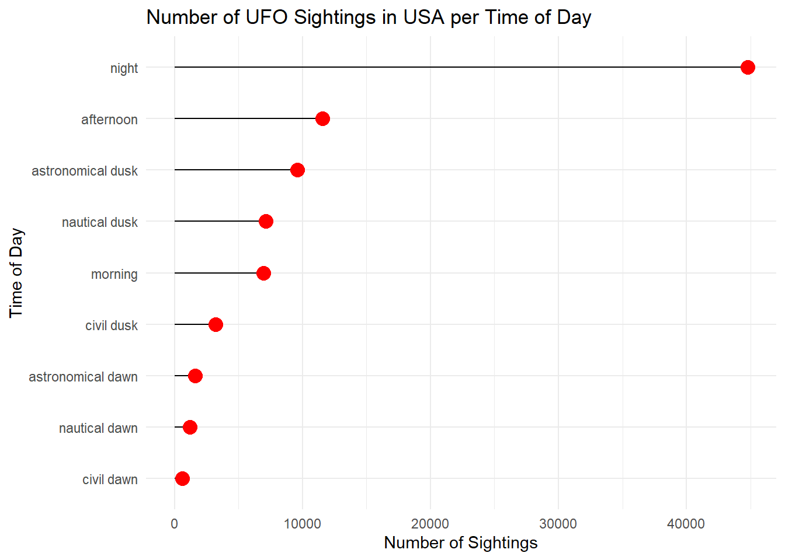

For my second blog post I am working with a UFO data set from the tidy tuesday library, originally taken from the National UFO Reporting Center. The data includes date, time, location, duration, time of day, and craft shape. I copy pasted US census data into an excel sheet to have state population data. I am most interested in the state, year and time of day variables. My question of interest is how UFO sightings in the USA have trended over time and what time of day and states are most popular. There are 96,429 observations in the data set.
# Read in data from tidy tuesday librarylibrary(tidytuesdayR)library(tidyverse)
── Attaching core tidyverse packages ──────────────────────── tidyverse 2.0.0 ──
✔ dplyr 1.1.4 ✔ readr 2.1.5
✔ forcats 1.0.0 ✔ stringr 1.5.1
✔ ggplot2 3.4.4 ✔ tibble 3.2.1
✔ lubridate 1.9.3 ✔ tidyr 1.3.0
✔ purrr 1.0.2
── Conflicts ────────────────────────────────────────── tidyverse_conflicts() ──
✖ dplyr::filter() masks stats::filter()
✖ dplyr::lag() masks stats::lag()
ℹ Use the conflicted package (<http://conflicted.r-lib.org/>) to force all conflicts to become errors
tuesdata <- tidytuesdayR::tt_load('2023-06-20')
--- Compiling #TidyTuesday Information for 2023-06-20 ----
--- There are 3 files available ---
--- Starting Download ---
Downloading file 1 of 3: `ufo_sightings.csv`
Downloading file 2 of 3: `places.csv`
Downloading file 3 of 3: `day_parts_map.csv`
--- Download complete ---
tuesdata <- tidytuesdayR::tt_load(2023, week =25)
--- Compiling #TidyTuesday Information for 2023-06-20 ----
--- There are 3 files available ---
--- Starting Download ---
Downloading file 1 of 3: `ufo_sightings.csv`
Downloading file 2 of 3: `places.csv`
Downloading file 3 of 3: `day_parts_map.csv`
library(usmap)plot_usmap(data = joined_state, values ="per_capita", color ="red") +scale_fill_continuous(name ="Number of UFO Sightings \n per 100,000 people", label = scales::comma, low ="white", high ="blue") +theme(legend.position ="right") +labs(title ="UFO Sightings in US States per 100,000 people")+theme(plot.title =element_text(hjust = .65))

Summary
This map is displaying the number of UFO sightings in each US state, adjusted for differing population sizes. Based off of this visualization it seems that no particular region has the most UFO sightings with states fairly evenly spread out from coast to coast. New York has significantly more sightings than any other state per 100,000 people, while Virginia has the second most and significantly higher than the next state. States in white, like Nevada have seen minimal sightings per 100,000 people.
ggplot(data = year_ufo, aes(x = year, y = nyear)) +geom_point(color ="red") +theme_minimal() +labs(title ="Number of UFO sightings over time in USA", y ="Number of Sightings") +scale_x_discrete(breaks =seq(1920, 2030, by =10)) +theme(plot.title =element_text(hjust = .25))

Summary
The scatterplot above displays the number of UFO sightings in the USA over the past 100 years. The amount of sightings stayed fairly constant with a minimal amount of sightings until the mid-1990s when there began a steady increase in sightings until the mid 2010s. The amount of sightings peaked in 2014, with the number of sightings undergoing a sudden drop after. The amount of sightings has been decreasing from the peak in 2014 to 2023.
ggplot(data = time, aes(x = day_part, y = nday_part)) +geom_segment(aes(xend = day_part, yend =0)) +geom_point(size =4, color ="red") +coord_flip() +theme_minimal() +labs(title ="Number of UFO Sightings in USA per Time of Day",y ="Number of Sightings", x ="Time of Day")

Summary
The graph above displays the number of UFO sightings in the United States for each time of day. UFO sightings at night have significantly more sightings than any other time of day, while times around dawn have the least amount of sightings. For reference, astronomical is the earliest and civil is the latest times for dawn and the opposite for dusk. It seems when the sky is darker there are more sightings with night, afternoon, and astronomical dusk having the most sightings.
Conclusion
Given the nature of the data I chose, it’s difficult to tell whether each observation was actually thought to be seen by someone or if they were just completely making it up. To address this I would have looked more carefully at the summary variables for each one, but there are so many observations that would be far too time consuming. If I had more time I would have looked into why there was such a large spike in the mid-1990s and why New York has so many more sightings per capita than any other state. I think it would be interesting to look into which UFO movies are based in each state or how many airports/military bases each state has that might make people think they are seeing UFOs in the sky.
Class Ideas
For the first graph I chose a map because the data was geographical and since there are 50 states + DC it seemed the best way to eliminate clutter. You could also see the fairly even spread of sightings per capita from coast to coast that you wouldn’t be able to tell if I had used a graph. I chose a scatterplot in the second plot because it is the most efficient way to represent 2 quantitative variables. You could easily see the trend and the sharp increase in sightings from the mid-1990s and into the 2000s. For the third graph I chose a lollipop plot because I was representing counts in the number of sightings and although lollipop plots aren’t always the best way to represent data it is easy to compare the different times of day in this case.